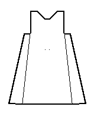

According to the typology given in Nockert, Type 6 Tunics are typified as
"Garments consisting of two straight-cut main pieces -- front and back -- cut diagonally and joined together with a shoulder seam. Side gores inserted between the main pieces, combining with them to form sleeve openings. No gores actually inserted in the main pieces. Pocket slits occur."
This is apparently an outer garment, probably sleeveless as the sleeve openings were hemmed or sewn down, such as a "surcote ouvert" (a sleeveless surcote), or a tabard. It is not accurately datable, other than perhaps to the 14th century. There is one example of this type of tunic; Herjolfsnes no.37.
Go to Tunic Page
Some Clothing of the Middle Ages - Tunics - Type 2, by I. Marc Carlson, Copyright 1996, 1997. This code is given for the free exchange of information, provided the Author's Name is included in all future revisions, and no money change hands-